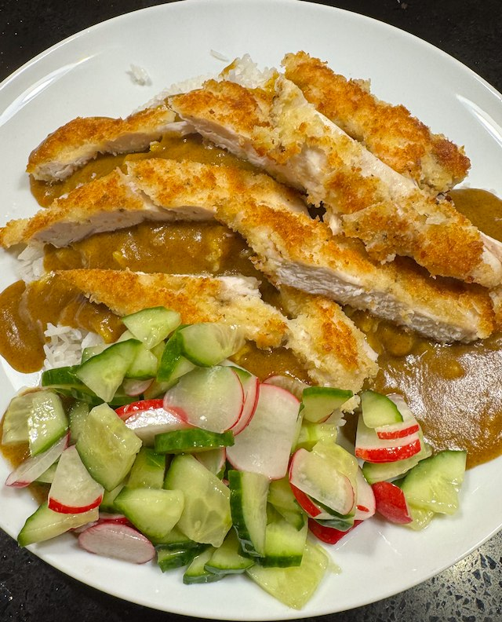
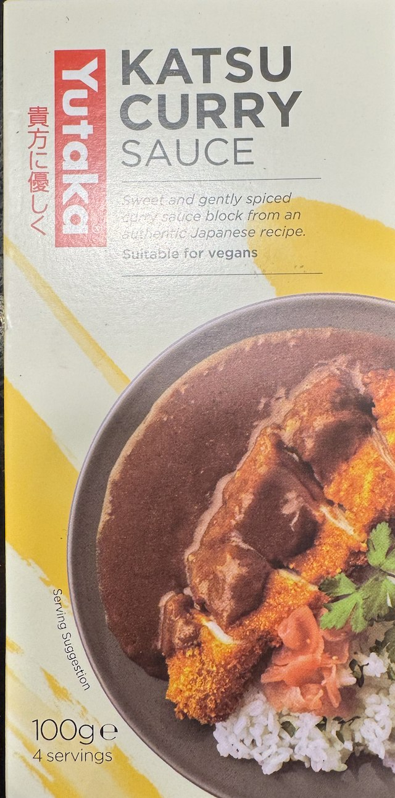

Chicken Katsu Curry

From Japan Centre. Serve with rice and cucumber and radish pickle.
Ingredients
- 1 onion, chopped
- 1 potato, peeled and chopped
- 1 carrot, peeled and chopped
- 500ml water
- 6 katsu curry cubes
- 4 chicken breasts
- salt and pepper
- flour
- 2 eggs, beaten
- panko breadcrumbs
- vegetable oil
Method
Get the rice going and make the pickle.
Cook the veg. Add potato, carrot and onion to a pan with the water. Bring to boil, then simmer for 20 min.
Prepare the chicken. Flatten the chicken, salt and pepper, then flour, then egg, then bread crumbs.
Make the sauce. When the veg is soft, use a stick blender to liquidate. Then add the curry cubes and mix. Keep cooking gently till everything else is ready. Thin with hot water to the desired consistency.
Cook the chicken. Heat the pan to hot. Add oil and chicken, turn the heat to medium and cook for 5 min. Flip, add a bit more oil and cook for another 5 min. You will probably have to cook the chicken in batches, so keep the cooked chicken warn and wipe the pan clean after each cook.
 Katsu Curry Cubes - use the whole box